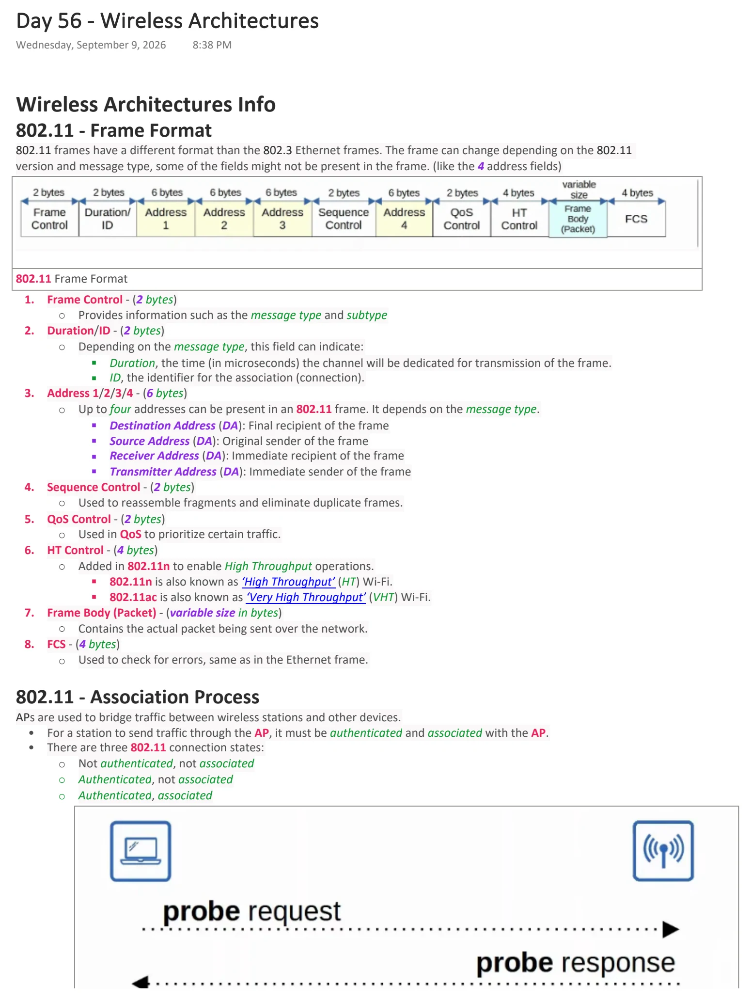
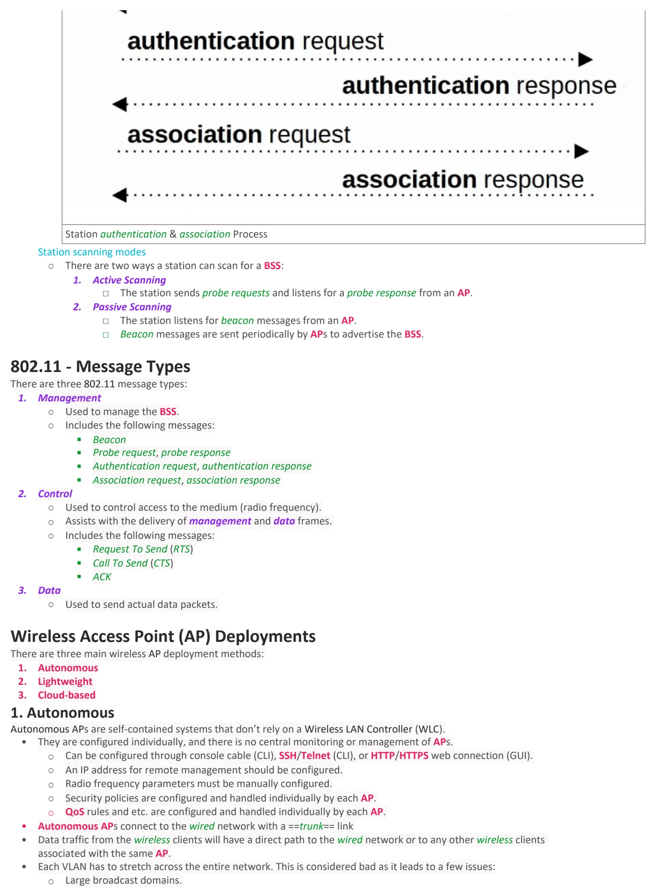
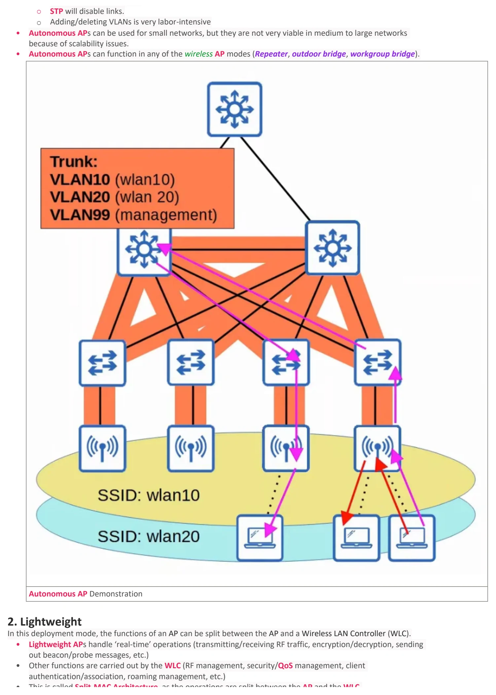
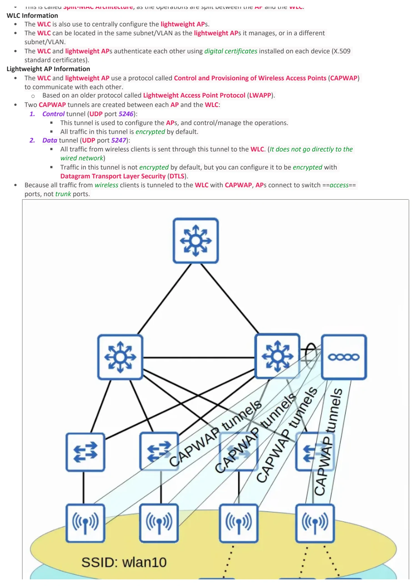
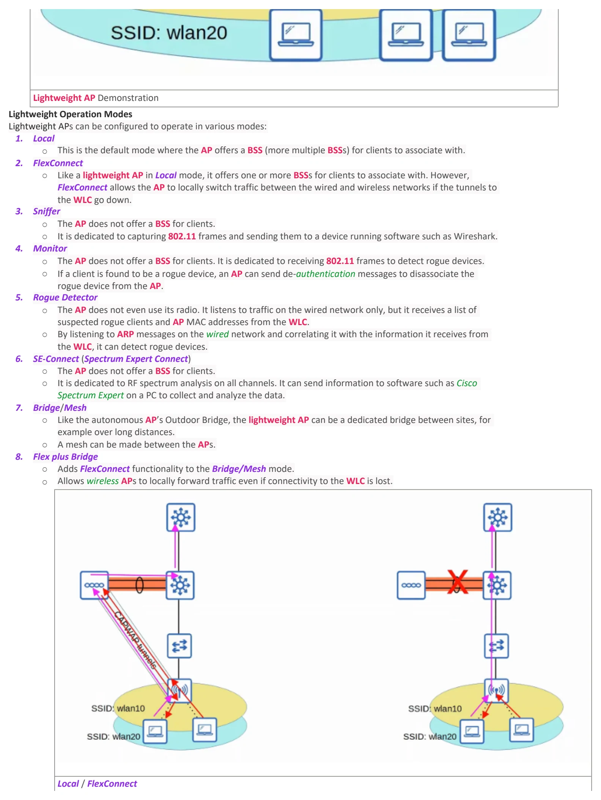
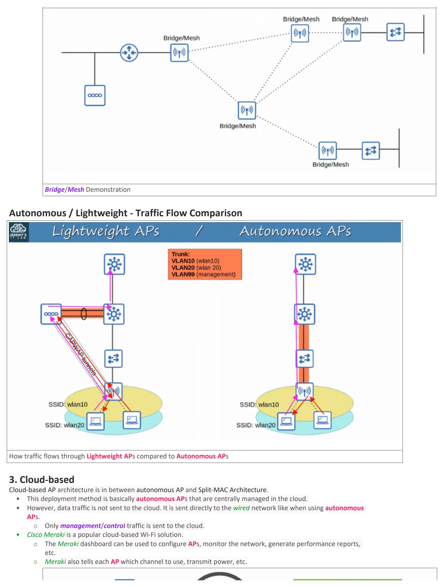
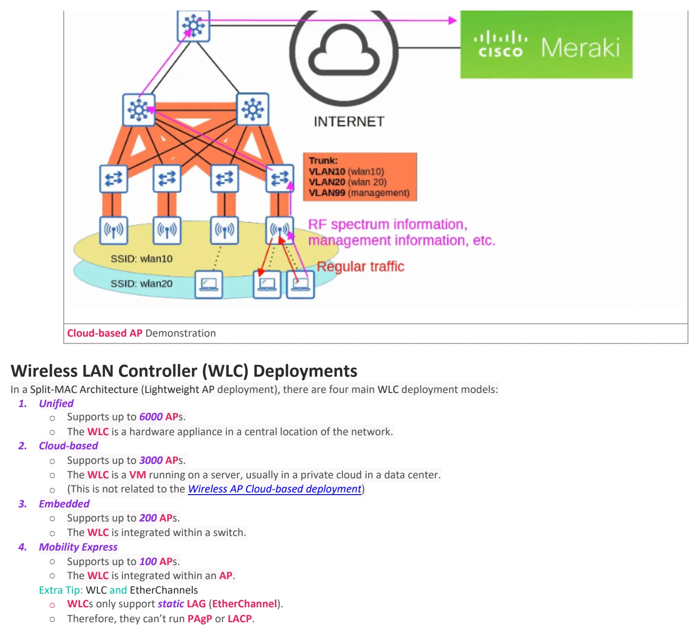

Wireless Architectures
Download original PDF






Text view — Wireless Architectures
Extracted from the original export. Diagrams and some formatting appear in the notes above.
Day 56 - Wireless Architectures Wednesday, September 9, 2026 8:38 PM Wireless Architectures Info 802.11 - Frame Format 802.11 frames have a different format than the 802.3 Ethernet frames. The frame can change depending on the 802.11 version and message type, some of the fields might not be present in the frame. (like the 4 address fields) 802.11 Frame Format 1. Frame Control - (2 bytes) ○ Provides information such as the message type and subtype 2. Duration/ID - (2 bytes) ○ Depending on the message type, this field can indicate: § Duration, the time (in microseconds) the channel will be dedicated for transmission of the frame. § ID, the identifier for the association (connection). 3. Address 1/2/3/4 - (6 bytes) ○ Up to four addresses can be present in an 802.11 frame. It depends on the message type. § Destination Address (DA): Final recipient of the frame § Source Address (DA): Original sender of the frame § Receiver Address (DA): Immediate recipient of the frame § Transmitter Address (DA): Immediate sender of the frame 4. Sequence Control - (2 bytes) ○ Used to reassemble fragments and eliminate duplicate frames. 5. QoS Control - (2 bytes) ○ Used in QoS to prioritize certain traffic. 6. HT Control - (4 bytes) ○ Added in 802.11n to enable High Throughput operations. § 802.11n is also known as ‘High Throughput’ (HT) Wi-Fi. § 802.11ac is also known as ‘Very High Throughput’ (VHT) Wi-Fi. 7. Frame Body (Packet) - (variable size in bytes) ○ Contains the actual packet being sent over the network. 8. FCS - (4 bytes) ○ Used to check for errors, same as in the Ethernet frame. 802.11 - Association Process APs are used to bridge traffic between wireless stations and other devices. • For a station to send traffic through the AP, it must be authenticated and associated with the AP. • There are three 802.11 connection states: ○ Not authenticated, not associated ○ Authenticated, not associated ○ Authenticated, associated Station authentication & association Process Station scanning modes ○ There are two ways a station can scan for a BSS: 1. Active Scanning □ The station sends probe requests and listens for a probe response from an AP. 2. Passive Scanning □ The station listens for beacon messages from an AP. □ Beacon messages are sent periodically by APs to advertise the BSS. 802.11 - Message Types There are three 802.11 message types: 1. Management ○ Used to manage the BSS. ○ Includes the following messages: § Beacon § Probe request, probe response § Authentication request, authentication response § Association request, association response 2. Control ○ Used to control access to the medium (radio frequency). ○ Assists with the delivery of management and data frames. ○ Includes the following messages: § Request To Send (RTS) § Call To Send (CTS) § ACK 3. Data ○ Used to send actual data packets. Wireless Access Point (AP) Deployments There are three main wireless AP deployment methods: 1. Autonomous 2. Lightweight 3. Cloud-based 1. Autonomous Autonomous APs are self-contained systems that don’t rely on a Wireless LAN Controller (WLC). • They are configured individually, and there is no central monitoring or management of APs. ○ Can be configured through console cable (CLI), SSH/Telnet (CLI), or HTTP/HTTPS web connection (GUI). ○ An IP address for remote management should be configured. ○ Radio frequency parameters must be manually configured. ○ Security policies are configured and handled individually by each AP. ○ QoS rules and etc. are configured and handled individually by each AP. • Autonomous APs connect to the wired network with a ==trunk== link • Data traffic from the wireless clients will have a direct path to the wired network or to any other wireless clients associated with the same AP. • Each VLAN has to stretch across the entire network. This is considered bad as it leads to a few issues: ○ Large broadcast domains. ○ STP will disable links. ○ Adding/deleting VLANs is very labor-intensive • Autonomous APs can be used for small networks, but they are not very viable in medium to large networks because of scalability issues. • Autonomous APs can function in any of the wireless AP modes (Repeater, outdoor bridge, workgroup bridge). Autonomous AP Demonstration 2. Lightweight In this deployment mode, the functions of an AP can be split between the AP and a Wireless LAN Controller (WLC). • Lightweight APs handle ‘real-time’ operations (transmitting/receiving RF traffic, encryption/decryption, sending out beacon/probe messages, etc.) • Other functions are carried out by the WLC (RF management, security/QoS management, client authentication/association, roaming management, etc.) • This is called Split-MAC Architecture, as the operations are split between the AP and the WLC. WLC Information • The WLC is also use to centrally configure the lightweight APs. • The WLC can be located in the same subnet/VLAN as the lightweight APs it manages, or in a different subnet/VLAN. • The WLC and lightweight APs authenticate each other using digital certificates installed on each device (X.509 standard certificates). Lightweight AP Information • The WLC and lightweight AP use a protocol called Control and Provisioning of Wireless Access Points (CAPWAP) to communicate with each other. ○ Based on an older protocol called Lightweight Access Point Protocol (LWAPP). • Two CAPWAP tunnels are created between each AP and the WLC: 1. Control tunnel (UDP port 5246): § This tunnel is used to configure the APs, and control/manage the operations. § All traffic in this tunnel is encrypted by default. 2. Data tunnel (UDP port 5247): § All traffic from wireless clients is sent through this tunnel to the WLC. (It does not go directly to the wired network) § Traffic in this tunnel is not encrypted by default, but you can configure it to be encrypted with Datagram Transport Layer Security (DTLS). • Because all traffic from wireless clients is tunneled to the WLC with CAPWAP, APs connect to switch ==access== ports, not trunk ports. Lightweight AP Demonstration Lightweight Operation Modes Lightweight APs can be configured to operate in various modes: 1. Local ○ This is the default mode where the AP offers a BSS (more multiple BSSs) for clients to associate with. 2. FlexConnect ○ Like a lightweight AP in Local mode, it offers one or more BSSs for clients to associate with. However, FlexConnect allows the AP to locally switch traffic between the wired and wireless networks if the tunnels to the WLC go down. 3. Sniffer ○ The AP does not offer a BSS for clients. ○ It is dedicated to capturing 802.11 frames and sending them to a device running software such as Wireshark. 4. Monitor ○ The AP does not offer a BSS for clients. It is dedicated to receiving 802.11 frames to detect rogue devices. ○ If a client is found to be a rogue device, an AP can send de-authentication messages to disassociate the rogue device from the AP. 5. Rogue Detector ○ The AP does not even use its radio. It listens to traffic on the wired network only, but it receives a list of suspected rogue clients and AP MAC addresses from the WLC. ○ By listening to ARP messages on the wired network and correlating it with the information it receives from the WLC, it can detect rogue devices. 6. SE-Connect (Spectrum Expert Connect) ○ The AP does not offer a BSS for clients. ○ It is dedicated to RF spectrum analysis on all channels. It can send information to software such as Cisco Spectrum Expert on a PC to collect and analyze the data. 7. Bridge/Mesh ○ Like the autonomous AP’s Outdoor Bridge, the lightweight AP can be a dedicated bridge between sites, for example over long distances. ○ A mesh can be made between the APs. 8. Flex plus Bridge ○ Adds FlexConnect functionality to the Bridge/Mesh mode. ○ Allows wireless APs to locally forward traffic even if connectivity to the WLC is lost. Local / FlexConnect Bridge/Mesh Demonstration Autonomous / Lightweight - Traffic Flow Comparison How traffic flows through Lightweight APs compared to Autonomous APs 3. Cloud-based Cloud-based AP architecture is in between autonomous AP and Split-MAC Architecture. • This deployment method is basically autonomous APs that are centrally managed in the cloud. • However, data traffic is not sent to the cloud. It is sent directly to the wired network like when using autonomous APs. ○ Only management/control traffic is sent to the cloud. • Cisco Meraki is a popular cloud-based Wi-Fi solution. ○ The Meraki dashboard can be used to configure APs, monitor the network, generate performance reports, etc. ○ Meraki also tells each AP which channel to use, transmit power, etc. Cloud-based AP Demonstration Wireless LAN Controller (WLC) Deployments In a Split-MAC Architecture (Lightweight AP deployment), there are four main WLC deployment models: 1. Unified ○ Supports up to 6000 APs. ○ The WLC is a hardware appliance in a central location of the network. 2. Cloud-based ○ Supports up to 3000 APs. ○ The WLC is a VM running on a server, usually in a private cloud in a data center. ○ (This is not related to the Wireless AP Cloud-based deployment) 3. Embedded ○ Supports up to 200 APs. ○ The WLC is integrated within a switch. 4. Mobility Express ○ Supports up to 100 APs. ○ The WLC is integrated within an AP. Extra Tip: WLC and EtherChannels ○ WLCs only support static LAG (EtherChannel). ○ Therefore, they can’t run PAgP or LACP. Day 56 - Wireless Architectures Wednesday, September 9, 2026 8:38 PM Wireless Architectures Info 802.11 - Frame Format 802.11 frames have a different format than the 802.3 Ethernet frames. The frame can change depending on the 802.11 version and message type, some of the fields might not be present in the frame. (like the 4 address fields) 802.11 Frame Format 1. Frame Control - (2 bytes) ○ Provides information such as the message type and subtype 2. Duration/ID - (2 bytes) ○ Depending on the message type, this field can indicate: § Duration, the time (in microseconds) the channel will be dedicated for transmission of the frame. § ID, the identifier for the association (connection). 3. Address 1/2/3/4 - (6 bytes) ○ Up to four addresses can be present in an 802.11 frame. It depends on the message type. § Destination Address (DA): Final recipient of the frame § Source Address (DA): Original sender of the frame § Receiver Address (DA): Immediate recipient of the frame § Transmitter Address (DA): Immediate sender of the frame 4. Sequence Control - (2 bytes) ○ Used to reassemble fragments and eliminate duplicate frames. 5. QoS Control - (2 bytes) ○ Used in QoS to prioritize certain traffic. 6. HT Control - (4 bytes) ○ Added in 802.11n to enable High Throughput operations. § 802.11n is also known as ‘High Throughput’ (HT) Wi-Fi. § 802.11ac is also known as ‘Very High Throughput’ (VHT) Wi-Fi. 7. Frame Body (Packet) - (variable size in bytes) ○ Contains the actual packet being sent over the network. 8. FCS - (4 bytes) ○ Used to check for errors, same as in the Ethernet frame. 802.11 - Association Process APs are used to bridge traffic between wireless stations and other devices. • For a station to send traffic through the AP, it must be authenticated and associated with the AP. • There are three 802.11 connection states: ○ Not authenticated, not associated ○ Authenticated, not associated ○ Authenticated, associated Station authentication & association Process Station scanning modes ○ There are two ways a station can scan for a BSS: 1. Active Scanning □ The station sends probe requests and listens for a probe response from an AP. 2. Passive Scanning □ The station listens for beacon messages from an AP. □ Beacon messages are sent periodically by APs to advertise the BSS. 802.11 - Message Types There are three 802.11 message types: 1. Management ○ Used to manage the BSS. ○ Includes the following messages: § Beacon § Probe request, probe response § Authentication request, authentication response § Association request, association response 2. Control ○ Used to control access to the medium (radio frequency). ○ Assists with the delivery of management and data frames. ○ Includes the following messages: § Request To Send (RTS) § Call To Send (CTS) § ACK 3. Data ○ Used to send actual data packets. Wireless Access Point (AP) Deployments There are three main wireless AP deployment methods: 1. Autonomous 2. Lightweight 3. Cloud-based 1. Autonomous Autonomous APs are self-contained systems that don’t rely on a Wireless LAN Controller (WLC). • They are configured individually, and there is no central monitoring or management of APs. ○ Can be configured through console cable (CLI), SSH/Telnet (CLI), or HTTP/HTTPS web connection (GUI). ○ An IP address for remote management should be configured. ○ Radio frequency parameters must be manually configured. ○ Security policies are configured and handled individually by each AP. ○ QoS rules and etc. are configured and handled individually by each AP. • Autonomous APs connect to the wired network with a ==trunk== link • Data traffic from the wireless clients will have a direct path to the wired network or to any other wireless clients associated with the same AP. • Each VLAN has to stretch across the entire network. This is considered bad as it leads to a few issues: ○ Large broadcast domains. ○ STP will disable links. ○ Adding/deleting VLANs is very labor-intensive • Autonomous APs can be used for small networks, but they are not very viable in medium to large networks because of scalability issues. • Autonomous APs can function in any of the wireless AP modes (Repeater, outdoor bridge, workgroup bridge). Autonomous AP Demonstration 2. Lightweight In this deployment mode, the functions of an AP can be split between the AP and a Wireless LAN Controller (WLC). • Lightweight APs handle ‘real-time’ operations (transmitting/receiving RF traffic, encryption/decryption, sending out beacon/probe messages, etc.) • Other functions are carried out by the WLC (RF management, security/QoS management, client authentication/association, roaming management, etc.) • This is called Split-MAC Architecture, as the operations are split between the AP and the WLC. WLC Information • The WLC is also use to centrally configure the lightweight APs. • The WLC can be located in the same subnet/VLAN as the lightweight APs it manages, or in a different subnet/VLAN. • The WLC and lightweight APs authenticate each other using digital certificates installed on each device (X.509 standard certificates). Lightweight AP Information • The WLC and lightweight AP use a protocol called Control and Provisioning of Wireless Access Points (CAPWAP) to communicate with each other. ○ Based on an older protocol called Lightweight Access Point Protocol (LWAPP). • Two CAPWAP tunnels are created between each AP and the WLC: 1. Control tunnel (UDP port 5246): § This tunnel is used to configure the APs, and control/manage the operations. § All traffic in this tunnel is encrypted by default. 2. Data tunnel (UDP port 5247): § All traffic from wireless clients is sent through this tunnel to the WLC. (It does not go directly to the wired network) § Traffic in this tunnel is not encrypted by default, but you can configure it to be encrypted with Datagram Transport Layer Security (DTLS). • Because all traffic from wireless clients is tunneled to the WLC with CAPWAP, APs connect to switch ==access== ports, not trunk ports. Lightweight AP Demonstration Lightweight Operation Modes Lightweight APs can be configured to operate in various modes: 1. Local ○ This is the default mode where the AP offers a BSS (more multiple BSSs) for clients to associate with. 2. FlexConnect ○ Like a lightweight AP in Local mode, it offers one or more BSSs for clients to associate with. However, FlexConnect allows the AP to locally switch traffic between the wired and wireless networks if the tunnels to the WLC go down. 3. Sniffer ○ The AP does not offer a BSS for clients. ○ It is dedicated to capturing 802.11 frames and sending them to a device running software such as Wireshark. 4. Monitor ○ The AP does not offer a BSS for clients. It is dedicated to receiving 802.11 frames to detect rogue devices. ○ If a client is found to be a rogue device, an AP can send de-authentication messages to disassociate the rogue device from the AP. 5. Rogue Detector ○ The AP does not even use its radio. It listens to traffic on the wired network only, but it receives a list of suspected rogue clients and AP MAC addresses from the WLC. ○ By listening to ARP messages on the wired network and correlating it with the information it receives from the WLC, it can detect rogue devices. 6. SE-Connect (Spectrum Expert Connect) ○ The AP does not offer a BSS for clients. ○ It is dedicated to RF spectrum analysis on all channels. It can send information to software such as Cisco Spectrum Expert on a PC to collect and analyze the data. 7. Bridge/Mesh ○ Like the autonomous AP’s Outdoor Bridge, the lightweight AP can be a dedicated bridge between sites, for example over long distances. ○ A mesh can be made between the APs. 8. Flex plus Bridge ○ Adds FlexConnect functionality to the Bridge/Mesh mode. ○ Allows wireless APs to locally forward traffic even if connectivity to the WLC is lost. Local / FlexConnect Bridge/Mesh Demonstration Autonomous / Lightweight - Traffic Flow Comparison How traffic flows through Lightweight APs compared to Autonomous APs 3. Cloud-based Cloud-based AP architecture is in between autonomous AP and Split-MAC Architecture. • This deployment method is basically autonomous APs that are centrally managed in the cloud. • However, data traffic is not sent to the cloud. It is sent directly to the wired network like when using autonomous APs. ○ Only management/control traffic is sent to the cloud. • Cisco Meraki is a popular cloud-based Wi-Fi solution. ○ The Meraki dashboard can be used to configure APs, monitor the network, generate performance reports, etc. ○ Meraki also tells each AP which channel to use, transmit power, etc. Cloud-based AP Demonstration Wireless LAN Controller (WLC) Deployments In a Split-MAC Architecture (Lightweight AP deployment), there are four main WLC deployment models: 1. Unified ○ Supports up to 6000 APs. ○ The WLC is a hardware appliance in a central location of the network. 2. Cloud-based ○ Supports up to 3000 APs. ○ The WLC is a VM running on a server, usually in a private cloud in a data center. ○ (This is not related to the Wireless AP Cloud-based deployment) 3. Embedded ○ Supports up to 200 APs. ○ The WLC is integrated within a switch. 4. Mobility Express ○ Supports up to 100 APs. ○ The WLC is integrated within an AP. Extra Tip: WLC and EtherChannels ○ WLCs only support static LAG (EtherChannel). ○ Therefore, they can’t run PAgP or LACP. Day 56 - Wireless Architectures Wednesday, September 9, 2026 8:38 PM Wireless Architectures Info 802.11 - Frame Format 802.11 frames have a different format than the 802.3 Ethernet frames. The frame can change depending on the 802.11 version and message type, some of the fields might not be present in the frame. (like the 4 address fields) 802.11 Frame Format 1. Frame Control - (2 bytes) ○ Provides information such as the message type and subtype 2. Duration/ID - (2 bytes) ○ Depending on the message type, this field can indicate: § Duration, the time (in microseconds) the channel will be dedicated for transmission of the frame. § ID, the identifier for the association (connection). 3. Address 1/2/3/4 - (6 bytes) ○ Up to four addresses can be present in an 802.11 frame. It depends on the message type. § Destination Address (DA): Final recipient of the frame § Source Address (DA): Original sender of the frame § Receiver Address (DA): Immediate recipient of the frame § Transmitter Address (DA): Immediate sender of the frame 4. Sequence Control - (2 bytes) ○ Used to reassemble fragments and eliminate duplicate frames. 5. QoS Control - (2 bytes) ○ Used in QoS to prioritize certain traffic. 6. HT Control - (4 bytes) ○ Added in 802.11n to enable High Throughput operations. § 802.11n is also known as ‘High Throughput’ (HT) Wi-Fi. § 802.11ac is also known as ‘Very High Throughput’ (VHT) Wi-Fi. 7. Frame Body (Packet) - (variable size in bytes) ○ Contains the actual packet being sent over the network. 8. FCS - (4 bytes) ○ Used to check for errors, same as in the Ethernet frame. 802.11 - Association Process APs are used to bridge traffic between wireless stations and other devices. • For a station to send traffic through the AP, it must be authenticated and associated with the AP. • There are three 802.11 connection states: ○ Not authenticated, not associated ○ Authenticated, not associated ○ Authenticated, associated Station authentication & association Process Station scanning modes ○ There are two ways a station can scan for a BSS: 1. Active Scanning □ The station sends probe requests and listens for a probe response from an AP. 2. Passive Scanning □ The station listens for beacon messages from an AP. □ Beacon messages are sent periodically by APs to advertise the BSS. 802.11 - Message Types There are three 802.11 message types: 1. Management ○ Used to manage the BSS. ○ Includes the following messages: § Beacon § Probe request, probe response § Authentication request, authentication response § Association request, association response 2. Control ○ Used to control access to the medium (radio frequency). ○ Assists with the delivery of management and data frames. ○ Includes the following messages: § Request To Send (RTS) § Call To Send (CTS) § ACK 3. Data ○ Used to send actual data packets. Wireless Access Point (AP) Deployments There are three main wireless AP deployment methods: 1. Autonomous 2. Lightweight 3. Cloud-based 1. Autonomous Autonomous APs are self-contained systems that don’t rely on a Wireless LAN Controller (WLC). • They are configured individually, and there is no central monitoring or management of APs. ○ Can be configured through console cable (CLI), SSH/Telnet (CLI), or HTTP/HTTPS web connection (GUI). ○ An IP address for remote management should be configured. ○ Radio frequency parameters must be manually configured. ○ Security policies are configured and handled individually by each AP. ○ QoS rules and etc. are configured and handled individually by each AP. • Autonomous APs connect to the wired network with a ==trunk== link • Data traffic from the wireless clients will have a direct path to the wired network or to any other wireless clients associated with the same AP. • Each VLAN has to stretch across the entire network. This is considered bad as it leads to a few issues: ○ Large broadcast domains. ○ STP will disable links. ○ Adding/deleting VLANs is very labor-intensive • Autonomous APs can be used for small networks, but they are not very viable in medium to large networks because of scalability issues. • Autonomous APs can function in any of the wireless AP modes (Repeater, outdoor bridge, workgroup bridge). Autonomous AP Demonstration 2. Lightweight In this deployment mode, the functions of an AP can be split between the AP and a Wireless LAN Controller (WLC). • Lightweight APs handle ‘real-time’ operations (transmitting/receiving RF traffic, encryption/decryption, sending out beacon/probe messages, etc.) • Other functions are carried out by the WLC (RF management, security/QoS management, client authentication/association, roaming management, etc.) • This is called Split-MAC Architecture, as the operations are split between the AP and the WLC. WLC Information • The WLC is also use to centrally configure the lightweight APs. • The WLC can be located in the same subnet/VLAN as the lightweight APs it manages, or in a different subnet/VLAN. • The WLC and lightweight APs authenticate each other using digital certificates installed on each device (X.509 standard certificates). Lightweight AP Information • The WLC and lightweight AP use a protocol called Control and Provisioning of Wireless Access Points (CAPWAP) to communicate with each other. ○ Based on an older protocol called Lightweight Access Point Protocol (LWAPP). • Two CAPWAP tunnels are created between each AP and the WLC: 1. Control tunnel (UDP port 5246): § This tunnel is used to configure the APs, and control/manage the operations. § All traffic in this tunnel is encrypted by default. 2. Data tunnel (UDP port 5247): § All traffic from wireless clients is sent through this tunnel to the WLC. (It does not go directly to the wired network) § Traffic in this tunnel is not encrypted by default, but you can configure it to be encrypted with Datagram Transport Layer Security (DTLS). • Because all traffic from wireless clients is tunneled to the WLC with CAPWAP, APs connect to switch ==access== ports, not trunk ports. Lightweight AP Demonstration Lightweight Operation Modes Lightweight APs can be configured to operate in various modes: 1. Local ○ This is the default mode where the AP offers a BSS (more multiple BSSs) for clients to associate with. 2. FlexConnect ○ Like a lightweight AP in Local mode, it offers one or more BSSs for clients to associate with. However, FlexConnect allows the AP to locally switch traffic between the wired and wireless networks if the tunnels to the WLC go down. 3. Sniffer ○ The AP does not offer a BSS for clients. ○ It is dedicated to capturing 802.11 frames and sending them to a device running software such as Wireshark. 4. Monitor ○ The AP does not offer a BSS for clients. It is dedicated to receiving 802.11 frames to detect rogue devices. ○ If a client is found to be a rogue device, an AP can send de-authentication messages to disassociate the rogue device from the AP. 5. Rogue Detector ○ The AP does not even use its radio. It listens to traffic on the wired network only, but it receives a list of suspected rogue clients and AP MAC addresses from the WLC. ○ By listening to ARP messages on the wired network and correlating it with the information it receives from the WLC, it can detect rogue devices. 6. SE-Connect (Spectrum Expert Connect) ○ The AP does not offer a BSS for clients. ○ It is dedicated to RF spectrum analysis on all channels. It can send information to software such as Cisco Spectrum Expert on a PC to collect and analyze the data. 7. Bridge/Mesh ○ Like the autonomous AP’s Outdoor Bridge, the lightweight AP can be a dedicated bridge between sites, for example over long distances. ○ A mesh can be made between the APs. 8. Flex plus Bridge ○ Adds FlexConnect functionality to the Bridge/Mesh mode. ○ Allows wireless APs to locally forward traffic even if connectivity to the WLC is lost. Local / FlexConnect Bridge/Mesh Demonstration Autonomous / Lightweight - Traffic Flow Comparison How traffic flows through Lightweight APs compared to Autonomous APs 3. Cloud-based Cloud-based AP architecture is in between autonomous AP and Split-MAC Architecture. • This deployment method is basically autonomous APs that are centrally managed in the cloud. • However, data traffic is not sent to the cloud. It is sent directly to the wired network like when using autonomous APs. ○ Only management/control traffic is sent to the cloud. • Cisco Meraki is a popular cloud-based Wi-Fi solution. ○ The Meraki dashboard can be used to configure APs, monitor the network, generate performance reports, etc. ○ Meraki also tells each AP which channel to use, transmit power, etc. Cloud-based AP Demonstration Wireless LAN Controller (WLC) Deployments In a Split-MAC Architecture (Lightweight AP deployment), there are four main WLC deployment models: 1. Unified ○ Supports up to 6000 APs. ○ The WLC is a hardware appliance in a central location of the network. 2. Cloud-based ○ Supports up to 3000 APs. ○ The WLC is a VM running on a server, usually in a private cloud in a data center. ○ (This is not related to the Wireless AP Cloud-based deployment) 3. Embedded ○ Supports up to 200 APs. ○ The WLC is integrated within a switch. 4. Mobility Express ○ Supports up to 100 APs. ○ The WLC is integrated within an AP. Extra Tip: WLC and EtherChannels ○ WLCs only support static LAG (EtherChannel). ○ Therefore, they can’t run PAgP or LACP. Day 56 - Wireless Architectures Wednesday, September 9, 2026 8:38 PM Wireless Architectures Info 802.11 - Frame Format 802.11 frames have a different format than the 802.3 Ethernet frames. The frame can change depending on the 802.11 version and message type, some of the fields might not be present in the frame. (like the 4 address fields) 802.11 Frame Format 1. Frame Control - (2 bytes) ○ Provides information such as the message type and subtype 2. Duration/ID - (2 bytes) ○ Depending on the message type, this field can indicate: § Duration, the time (in microseconds) the channel will be dedicated for transmission of the frame. § ID, the identifier for the association (connection). 3. Address 1/2/3/4 - (6 bytes) ○ Up to four addresses can be present in an 802.11 frame. It depends on the message type. § Destination Address (DA): Final recipient of the frame § Source Address (DA): Original sender of the frame § Receiver Address (DA): Immediate recipient of the frame § Transmitter Address (DA): Immediate sender of the frame 4. Sequence Control - (2 bytes) ○ Used to reassemble fragments and eliminate duplicate frames. 5. QoS Control - (2 bytes) ○ Used in QoS to prioritize certain traffic. 6. HT Control - (4 bytes) ○ Added in 802.11n to enable High Throughput operations. § 802.11n is also known as ‘High Throughput’ (HT) Wi-Fi. § 802.11ac is also known as ‘Very High Throughput’ (VHT) Wi-Fi. 7. Frame Body (Packet) - (variable size in bytes) ○ Contains the actual packet being sent over the network. 8. FCS - (4 bytes) ○ Used to check for errors, same as in the Ethernet frame. 802.11 - Association Process APs are used to bridge traffic between wireless stations and other devices. • For a station to send traffic through the AP, it must be authenticated and associated with the AP. • There are three 802.11 connection states: ○ Not authenticated, not associated ○ Authenticated, not associated ○ Authenticated, associated Station authentication & association Process Station scanning modes ○ There are two ways a station can scan for a BSS: 1. Active Scanning □ The station sends probe requests and listens for a probe response from an AP. 2. Passive Scanning □ The station listens for beacon messages from an AP. □ Beacon messages are sent periodically by APs to advertise the BSS. 802.11 - Message Types There are three 802.11 message types: 1. Management ○ Used to manage the BSS. ○ Includes the following messages: § Beacon § Probe request, probe response § Authentication request, authentication response § Association request, association response 2. Control ○ Used to control access to the medium (radio frequency). ○ Assists with the delivery of management and data frames. ○ Includes the following messages: § Request To Send (RTS) § Call To Send (CTS) § ACK 3. Data ○ Used to send actual data packets. Wireless Access Point (AP) Deployments There are three main wireless AP deployment methods: 1. Autonomous 2. Lightweight 3. Cloud-based 1. Autonomous Autonomous APs are self-contained systems that don’t rely on a Wireless LAN Controller (WLC). • They are configured individually, and there is no central monitoring or management of APs. ○ Can be configured through console cable (CLI), SSH/Telnet (CLI), or HTTP/HTTPS web connection (GUI). ○ An IP address for remote management should be configured. ○ Radio frequency parameters must be manually configured. ○ Security policies are configured and handled individually by each AP. ○ QoS rules and etc. are configured and handled individually by each AP. • Autonomous APs connect to the wired network with a ==trunk== link • Data traffic from the wireless clients will have a direct path to the wired network or to any other wireless clients associated with the same AP. • Each VLAN has to stretch across the entire network. This is considered bad as it leads to a few issues: ○ Large broadcast domains. ○ STP will disable links. ○ Adding/deleting VLANs is very labor-intensive • Autonomous APs can be used for small networks, but they are not very viable in medium to large networks because of scalability issues. • Autonomous APs can function in any of the wireless AP modes (Repeater, outdoor bridge, workgroup bridge). Autonomous AP Demonstration 2. Lightweight In this deployment mode, the functions of an AP can be split between the AP and a Wireless LAN Controller (WLC). • Lightweight APs handle ‘real-time’ operations (transmitting/receiving RF traffic, encryption/decryption, sending out beacon/probe messages, etc.) • Other functions are carried out by the WLC (RF management, security/QoS management, client authentication/association, roaming management, etc.) • This is called Split-MAC Architecture, as the operations are split between the AP and the WLC. WLC Information • The WLC is also use to centrally configure the lightweight APs. • The WLC can be located in the same subnet/VLAN as the lightweight APs it manages, or in a different subnet/VLAN. • The WLC and lightweight APs authenticate each other using digital certificates installed on each device (X.509 standard certificates). Lightweight AP Information • The WLC and lightweight AP use a protocol called Control and Provisioning of Wireless Access Points (CAPWAP) to communicate with each other. ○ Based on an older protocol called Lightweight Access Point Protocol (LWAPP). • Two CAPWAP tunnels are created between each AP and the WLC: 1. Control tunnel (UDP port 5246): § This tunnel is used to configure the APs, and control/manage the operations. § All traffic in this tunnel is encrypted by default. 2. Data tunnel (UDP port 5247): § All traffic from wireless clients is sent through this tunnel to the WLC. (It does not go directly to the wired network) § Traffic in this tunnel is not encrypted by default, but you can configure it to be encrypted with Datagram Transport Layer Security (DTLS). • Because all traffic from wireless clients is tunneled to the WLC with CAPWAP, APs connect to switch ==access== ports, not trunk ports. Lightweight AP Demonstration Lightweight Operation Modes Lightweight APs can be configured to operate in various modes: 1. Local ○ This is the default mode where the AP offers a BSS (more multiple BSSs) for clients to associate with. 2. FlexConnect ○ Like a lightweight AP in Local mode, it offers one or more BSSs for clients to associate with. However, FlexConnect allows the AP to locally switch traffic between the wired and wireless networks if the tunnels to the WLC go down. 3. Sniffer ○ The AP does not offer a BSS for clients. ○ It is dedicated to capturing 802.11 frames and sending them to a device running software such as Wireshark. 4. Monitor ○ The AP does not offer a BSS for clients. It is dedicated to receiving 802.11 frames to detect rogue devices. ○ If a client is found to be a rogue device, an AP can send de-authentication messages to disassociate the rogue device from the AP. 5. Rogue Detector ○ The AP does not even use its radio. It listens to traffic on the wired network only, but it receives a list of suspected rogue clients and AP MAC addresses from the WLC. ○ By listening to ARP messages on the wired network and correlating it with the information it receives from the WLC, it can detect rogue devices. 6. SE-Connect (Spectrum Expert Connect) ○ The AP does not offer a BSS for clients. ○ It is dedicated to RF spectrum analysis on all channels. It can send information to software such as Cisco Spectrum Expert on a PC to collect and analyze the data. 7. Bridge/Mesh ○ Like the autonomous AP’s Outdoor Bridge, the lightweight AP can be a dedicated bridge between sites, for example over long distances. ○ A mesh can be made between the APs. 8. Flex plus Bridge ○ Adds FlexConnect functionality to the Bridge/Mesh mode. ○ Allows wireless APs to locally forward traffic even if connectivity to the WLC is lost. Local / FlexConnect Bridge/Mesh Demonstration Autonomous / Lightweight - Traffic Flow Comparison How traffic flows through Lightweight APs compared to Autonomous APs 3. Cloud-based Cloud-based AP architecture is in between autonomous AP and Split-MAC Architecture. • This deployment method is basically autonomous APs that are centrally managed in the cloud. • However, data traffic is not sent to the cloud. It is sent directly to the wired network like when using autonomous APs. ○ Only management/control traffic is sent to the cloud. • Cisco Meraki is a popular cloud-based Wi-Fi solution. ○ The Meraki dashboard can be used to configure APs, monitor the network, generate performance reports, etc. ○ Meraki also tells each AP which channel to use, transmit power, etc. Cloud-based AP Demonstration Wireless LAN Controller (WLC) Deployments In a Split-MAC Architecture (Lightweight AP deployment), there are four main WLC deployment models: 1. Unified ○ Supports up to 6000 APs. ○ The WLC is a hardware appliance in a central location of the network. 2. Cloud-based ○ Supports up to 3000 APs. ○ The WLC is a VM running on a server, usually in a private cloud in a data center. ○ (This is not related to the Wireless AP Cloud-based deployment) 3. Embedded ○ Supports up to 200 APs. ○ The WLC is integrated within a switch. 4. Mobility Express ○ Supports up to 100 APs. ○ The WLC is integrated within an AP. Extra Tip: WLC and EtherChannels ○ WLCs only support static LAG (EtherChannel). ○ Therefore, they can’t run PAgP or LACP. Day 56 - Wireless Architectures Wednesday, September 9, 2026 8:38 PM Wireless Architectures Info 802.11 - Frame Format 802.11 frames have a different format than the 802.3 Ethernet frames. The frame can change depending on the 802.11 version and message type, some of the fields might not be present in the frame. (like the 4 address fields) 802.11 Frame Format 1. Frame Control - (2 bytes) ○ Provides information such as the message type and subtype 2. Duration/ID - (2 bytes) ○ Depending on the message type, this field can indicate: § Duration, the time (in microseconds) the channel will be dedicated for transmission of the frame. § ID, the identifier for the association (connection). 3. Address 1/2/3/4 - (6 bytes) ○ Up to four addresses can be present in an 802.11 frame. It depends on the message type. § Destination Address (DA): Final recipient of the frame § Source Address (DA): Original sender of the frame § Receiver Address (DA): Immediate recipient of the frame § Transmitter Address (DA): Immediate sender of the frame 4. Sequence Control - (2 bytes) ○ Used to reassemble fragments and eliminate duplicate frames. 5. QoS Control - (2 bytes) ○ Used in QoS to prioritize certain traffic. 6. HT Control - (4 bytes) ○ Added in 802.11n to enable High Throughput operations. § 802.11n is also known as ‘High Throughput’ (HT) Wi-Fi. § 802.11ac is also known as ‘Very High Throughput’ (VHT) Wi-Fi. 7. Frame Body (Packet) - (variable size in bytes) ○ Contains the actual packet being sent over the network. 8. FCS - (4 bytes) ○ Used to check for errors, same as in the Ethernet frame. 802.11 - Association Process APs are used to bridge traffic between wireless stations and other devices. • For a station to send traffic through the AP, it must be authenticated and associated with the AP. • There are three 802.11 connection states: ○ Not authenticated, not associated ○ Authenticated, not associated ○ Authenticated, associated Station authentication & association Process Station scanning modes ○ There are two ways a station can scan for a BSS: 1. Active Scanning □ The station sends probe requests and listens for a probe response from an AP. 2. Passive Scanning □ The station listens for beacon messages from an AP. □ Beacon messages are sent periodically by APs to advertise the BSS. 802.11 - Message Types There are three 802.11 message types: 1. Management ○ Used to manage the BSS. ○ Includes the following messages: § Beacon § Probe request, probe response § Authentication request, authentication response § Association request, association response 2. Control ○ Used to control access to the medium (radio frequency). ○ Assists with the delivery of management and data frames. ○ Includes the following messages: § Request To Send (RTS) § Call To Send (CTS) § ACK 3. Data ○ Used to send actual data packets. Wireless Access Point (AP) Deployments There are three main wireless AP deployment methods: 1. Autonomous 2. Lightweight 3. Cloud-based 1. Autonomous Autonomous APs are self-contained systems that don’t rely on a Wireless LAN Controller (WLC). • They are configured individually, and there is no central monitoring or management of APs. ○ Can be configured through console cable (CLI), SSH/Telnet (CLI), or HTTP/HTTPS web connection (GUI). ○ An IP address for remote management should be configured. ○ Radio frequency parameters must be manually configured. ○ Security policies are configured and handled individually by each AP. ○ QoS rules and etc. are configured and handled individually by each AP. • Autonomous APs connect to the wired network with a ==trunk== link • Data traffic from the wireless clients will have a direct path to the wired network or to any other wireless clients associated with the same AP. • Each VLAN has to stretch across the entire network. This is considered bad as it leads to a few issues: ○ Large broadcast domains. ○ STP will disable links. ○ Adding/deleting VLANs is very labor-intensive • Autonomous APs can be used for small networks, but they are not very viable in medium to large networks because of scalability issues. • Autonomous APs can function in any of the wireless AP modes (Repeater, outdoor bridge, workgroup bridge). Autonomous AP Demonstration 2. Lightweight In this deployment mode, the functions of an AP can be split between the AP and a Wireless LAN Controller (WLC). • Lightweight APs handle ‘real-time’ operations (transmitting/receiving RF traffic, encryption/decryption, sending out beacon/probe messages, etc.) • Other functions are carried out by the WLC (RF management, security/QoS management, client authentication/association, roaming management, etc.) • This is called Split-MAC Architecture, as the operations are split between the AP and the WLC. WLC Information • The WLC is also use to centrally configure the lightweight APs. • The WLC can be located in the same subnet/VLAN as the lightweight APs it manages, or in a different subnet/VLAN. • The WLC and lightweight APs authenticate each other using digital certificates installed on each device (X.509 standard certificates). Lightweight AP Information • The WLC and lightweight AP use a protocol called Control and Provisioning of Wireless Access Points (CAPWAP) to communicate with each other. ○ Based on an older protocol called Lightweight Access Point Protocol (LWAPP). • Two CAPWAP tunnels are created between each AP and the WLC: 1. Control tunnel (UDP port 5246): § This tunnel is used to configure the APs, and control/manage the operations. § All traffic in this tunnel is encrypted by default. 2. Data tunnel (UDP port 5247): § All traffic from wireless clients is sent through this tunnel to the WLC. (It does not go directly to the wired network) § Traffic in this tunnel is not encrypted by default, but you can configure it to be encrypted with Datagram Transport Layer Security (DTLS). • Because all traffic from wireless clients is tunneled to the WLC with CAPWAP, APs connect to switch ==access== ports, not trunk ports. Lightweight AP Demonstration Lightweight Operation Modes Lightweight APs can be configured to operate in various modes: 1. Local ○ This is the default mode where the AP offers a BSS (more multiple BSSs) for clients to associate with. 2. FlexConnect ○ Like a lightweight AP in Local mode, it offers one or more BSSs for clients to associate with. However, FlexConnect allows the AP to locally switch traffic between the wired and wireless networks if the tunnels to the WLC go down. 3. Sniffer ○ The AP does not offer a BSS for clients. ○ It is dedicated to capturing 802.11 frames and sending them to a device running software such as Wireshark. 4. Monitor ○ The AP does not offer a BSS for clients. It is dedicated to receiving 802.11 frames to detect rogue devices. ○ If a client is found to be a rogue device, an AP can send de-authentication messages to disassociate the rogue device from the AP. 5. Rogue Detector ○ The AP does not even use its radio. It listens to traffic on the wired network only, but it receives a list of suspected rogue clients and AP MAC addresses from the WLC. ○ By listening to ARP messages on the wired network and correlating it with the information it receives from the WLC, it can detect rogue devices. 6. SE-Connect (Spectrum Expert Connect) ○ The AP does not offer a BSS for clients. ○ It is dedicated to RF spectrum analysis on all channels. It can send information to software such as Cisco Spectrum Expert on a PC to collect and analyze the data. 7. Bridge/Mesh ○ Like the autonomous AP’s Outdoor Bridge, the lightweight AP can be a dedicated bridge between sites, for example over long distances. ○ A mesh can be made between the APs. 8. Flex plus Bridge ○ Adds FlexConnect functionality to the Bridge/Mesh mode. ○ Allows wireless APs to locally forward traffic even if connectivity to the WLC is lost. Local / FlexConnect Bridge/Mesh Demonstration Autonomous / Lightweight - Traffic Flow Comparison How traffic flows through Lightweight APs compared to Autonomous APs 3. Cloud-based Cloud-based AP architecture is in between autonomous AP and Split-MAC Architecture. • This deployment method is basically autonomous APs that are centrally managed in the cloud. • However, data traffic is not sent to the cloud. It is sent directly to the wired network like when using autonomous APs. ○ Only management/control traffic is sent to the cloud. • Cisco Meraki is a popular cloud-based Wi-Fi solution. ○ The Meraki dashboard can be used to configure APs, monitor the network, generate performance reports, etc. ○ Meraki also tells each AP which channel to use, transmit power, etc. Cloud-based AP Demonstration Wireless LAN Controller (WLC) Deployments In a Split-MAC Architecture (Lightweight AP deployment), there are four main WLC deployment models: 1. Unified ○ Supports up to 6000 APs. ○ The WLC is a hardware appliance in a central location of the network. 2. Cloud-based ○ Supports up to 3000 APs. ○ The WLC is a VM running on a server, usually in a private cloud in a data center. ○ (This is not related to the Wireless AP Cloud-based deployment) 3. Embedded ○ Supports up to 200 APs. ○ The WLC is integrated within a switch. 4. Mobility Express ○ Supports up to 100 APs. ○ The WLC is integrated within an AP. Extra Tip: WLC and EtherChannels ○ WLCs only support static LAG (EtherChannel). ○ Therefore, they can’t run PAgP or LACP. Day 56 - Wireless Architectures Wednesday, September 9, 2026 8:38 PM Wireless Architectures Info 802.11 - Frame Format 802.11 frames have a different format than the 802.3 Ethernet frames. The frame can change depending on the 802.11 version and message type, some of the fields might not be present in the frame. (like the 4 address fields) 802.11 Frame Format 1. Frame Control - (2 bytes) ○ Provides information such as the message type and subtype 2. Duration/ID - (2 bytes) ○ Depending on the message type, this field can indicate: § Duration, the time (in microseconds) the channel will be dedicated for transmission of the frame. § ID, the identifier for the association (connection). 3. Address 1/2/3/4 - (6 bytes) ○ Up to four addresses can be present in an 802.11 frame. It depends on the message type. § Destination Address (DA): Final recipient of the frame § Source Address (DA): Original sender of the frame § Receiver Address (DA): Immediate recipient of the frame § Transmitter Address (DA): Immediate sender of the frame 4. Sequence Control - (2 bytes) ○ Used to reassemble fragments and eliminate duplicate frames. 5. QoS Control - (2 bytes) ○ Used in QoS to prioritize certain traffic. 6. HT Control - (4 bytes) ○ Added in 802.11n to enable High Throughput operations. § 802.11n is also known as ‘High Throughput’ (HT) Wi-Fi. § 802.11ac is also known as ‘Very High Throughput’ (VHT) Wi-Fi. 7. Frame Body (Packet) - (variable size in bytes) ○ Contains the actual packet being sent over the network. 8. FCS - (4 bytes) ○ Used to check for errors, same as in the Ethernet frame. 802.11 - Association Process APs are used to bridge traffic between wireless stations and other devices. • For a station to send traffic through the AP, it must be authenticated and associated with the AP. • There are three 802.11 connection states: ○ Not authenticated, not associated ○ Authenticated, not associated ○ Authenticated, associated Station authentication & association Process Station scanning modes ○ There are two ways a station can scan for a BSS: 1. Active Scanning □ The station sends probe requests and listens for a probe response from an AP. 2. Passive Scanning □ The station listens for beacon messages from an AP. □ Beacon messages are sent periodically by APs to advertise the BSS. 802.11 - Message Types There are three 802.11 message types: 1. Management ○ Used to manage the BSS. ○ Includes the following messages: § Beacon § Probe request, probe response § Authentication request, authentication response § Association request, association response 2. Control ○ Used to control access to the medium (radio frequency). ○ Assists with the delivery of management and data frames. ○ Includes the following messages: § Request To Send (RTS) § Call To Send (CTS) § ACK 3. Data ○ Used to send actual data packets. Wireless Access Point (AP) Deployments There are three main wireless AP deployment methods: 1. Autonomous 2. Lightweight 3. Cloud-based 1. Autonomous Autonomous APs are self-contained systems that don’t rely on a Wireless LAN Controller (WLC). • They are configured individually, and there is no central monitoring or management of APs. ○ Can be configured through console cable (CLI), SSH/Telnet (CLI), or HTTP/HTTPS web connection (GUI). ○ An IP address for remote management should be configured. ○ Radio frequency parameters must be manually configured. ○ Security policies are configured and handled individually by each AP. ○ QoS rules and etc. are configured and handled individually by each AP. • Autonomous APs connect to the wired network with a ==trunk== link • Data traffic from the wireless clients will have a direct path to the wired network or to any other wireless clients associated with the same AP. • Each VLAN has to stretch across the entire network. This is considered bad as it leads to a few issues: ○ Large broadcast domains. ○ STP will disable links. ○ Adding/deleting VLANs is very labor-intensive • Autonomous APs can be used for small networks, but they are not very viable in medium to large networks because of scalability issues. • Autonomous APs can function in any of the wireless AP modes (Repeater, outdoor bridge, workgroup bridge). Autonomous AP Demonstration 2. Lightweight In this deployment mode, the functions of an AP can be split between the AP and a Wireless LAN Controller (WLC). • Lightweight APs handle ‘real-time’ operations (transmitting/receiving RF traffic, encryption/decryption, sending out beacon/probe messages, etc.) • Other functions are carried out by the WLC (RF management, security/QoS management, client authentication/association, roaming management, etc.) • This is called Split-MAC Architecture, as the operations are split between the AP and the WLC. WLC Information • The WLC is also use to centrally configure the lightweight APs. • The WLC can be located in the same subnet/VLAN as the lightweight APs it manages, or in a different subnet/VLAN. • The WLC and lightweight APs authenticate each other using digital certificates installed on each device (X.509 standard certificates). Lightweight AP Information • The WLC and lightweight AP use a protocol called Control and Provisioning of Wireless Access Points (CAPWAP) to communicate with each other. ○ Based on an older protocol called Lightweight Access Point Protocol (LWAPP). • Two CAPWAP tunnels are created between each AP and the WLC: 1. Control tunnel (UDP port 5246): § This tunnel is used to configure the APs, and control/manage the operations. § All traffic in this tunnel is encrypted by default. 2. Data tunnel (UDP port 5247): § All traffic from wireless clients is sent through this tunnel to the WLC. (It does not go directly to the wired network) § Traffic in this tunnel is not encrypted by default, but you can configure it to be encrypted with Datagram Transport Layer Security (DTLS). • Because all traffic from wireless clients is tunneled to the WLC with CAPWAP, APs connect to switch ==access== ports, not trunk ports. Lightweight AP Demonstration Lightweight Operation Modes Lightweight APs can be configured to operate in various modes: 1. Local ○ This is the default mode where the AP offers a BSS (more multiple BSSs) for clients to associate with. 2. FlexConnect ○ Like a lightweight AP in Local mode, it offers one or more BSSs for clients to associate with. However, FlexConnect allows the AP to locally switch traffic between the wired and wireless networks if the tunnels to the WLC go down. 3. Sniffer ○ The AP does not offer a BSS for clients. ○ It is dedicated to capturing 802.11 frames and sending them to a device running software such as Wireshark. 4. Monitor ○ The AP does not offer a BSS for clients. It is dedicated to receiving 802.11 frames to detect rogue devices. ○ If a client is found to be a rogue device, an AP can send de-authentication messages to disassociate the rogue device from the AP. 5. Rogue Detector ○ The AP does not even use its radio. It listens to traffic on the wired network only, but it receives a list of suspected rogue clients and AP MAC addresses from the WLC. ○ By listening to ARP messages on the wired network and correlating it with the information it receives from the WLC, it can detect rogue devices. 6. SE-Connect (Spectrum Expert Connect) ○ The AP does not offer a BSS for clients. ○ It is dedicated to RF spectrum analysis on all channels. It can send information to software such as Cisco Spectrum Expert on a PC to collect and analyze the data. 7. Bridge/Mesh ○ Like the autonomous AP’s Outdoor Bridge, the lightweight AP can be a dedicated bridge between sites, for example over long distances. ○ A mesh can be made between the APs. 8. Flex plus Bridge ○ Adds FlexConnect functionality to the Bridge/Mesh mode. ○ Allows wireless APs to locally forward traffic even if connectivity to the WLC is lost. Local / FlexConnect Bridge/Mesh Demonstration Autonomous / Lightweight - Traffic Flow Comparison How traffic flows through Lightweight APs compared to Autonomous APs 3. Cloud-based Cloud-based AP architecture is in between autonomous AP and Split-MAC Architecture. • This deployment method is basically autonomous APs that are centrally managed in the cloud. • However, data traffic is not sent to the cloud. It is sent directly to the wired network like when using autonomous APs. ○ Only management/control traffic is sent to the cloud. • Cisco Meraki is a popular cloud-based Wi-Fi solution. ○ The Meraki dashboard can be used to configure APs, monitor the network, generate performance reports, etc. ○ Meraki also tells each AP which channel to use, transmit power, etc. Cloud-based AP Demonstration Wireless LAN Controller (WLC) Deployments In a Split-MAC Architecture (Lightweight AP deployment), there are four main WLC deployment models: 1. Unified ○ Supports up to 6000 APs. ○ The WLC is a hardware appliance in a central location of the network. 2. Cloud-based ○ Supports up to 3000 APs. ○ The WLC is a VM running on a server, usually in a private cloud in a data center. ○ (This is not related to the Wireless AP Cloud-based deployment) 3. Embedded ○ Supports up to 200 APs. ○ The WLC is integrated within a switch. 4. Mobility Express ○ Supports up to 100 APs. ○ The WLC is integrated within an AP. Extra Tip: WLC and EtherChannels ○ WLCs only support static LAG (EtherChannel). ○ Therefore, they can’t run PAgP or LACP. Day 56 - Wireless Architectures Wednesday, September 9, 2026 8:38 PM Wireless Architectures Info 802.11 - Frame Format 802.11 frames have a different format than the 802.3 Ethernet frames. The frame can change depending on the 802.11 version and message type, some of the fields might not be present in the frame. (like the 4 address fields) 802.11 Frame Format 1. Frame Control - (2 bytes) ○ Provides information such as the message type and subtype 2. Duration/ID - (2 bytes) ○ Depending on the message type, this field can indicate: § Duration, the time (in microseconds) the channel will be dedicated for transmission of the frame. § ID, the identifier for the association (connection). 3. Address 1/2/3/4 - (6 bytes) ○ Up to four addresses can be present in an 802.11 frame. It depends on the message type. § Destination Address (DA): Final recipient of the frame § Source Address (DA): Original sender of the frame § Receiver Address (DA): Immediate recipient of the frame § Transmitter Address (DA): Immediate sender of the frame 4. Sequence Control - (2 bytes) ○ Used to reassemble fragments and eliminate duplicate frames. 5. QoS Control - (2 bytes) ○ Used in QoS to prioritize certain traffic. 6. HT Control - (4 bytes) ○ Added in 802.11n to enable High Throughput operations. § 802.11n is also known as ‘High Throughput’ (HT) Wi-Fi. § 802.11ac is also known as ‘Very High Throughput’ (VHT) Wi-Fi. 7. Frame Body (Packet) - (variable size in bytes) ○ Contains the actual packet being sent over the network. 8. FCS - (4 bytes) ○ Used to check for errors, same as in the Ethernet frame. 802.11 - Association Process APs are used to bridge traffic between wireless stations and other devices. • For a station to send traffic through the AP, it must be authenticated and associated with the AP. • There are three 802.11 connection states: ○ Not authenticated, not associated ○ Authenticated, not associated ○ Authenticated, associated Station authentication & association Process Station scanning modes ○ There are two ways a station can scan for a BSS: 1. Active Scanning □ The station sends probe requests and listens for a probe response from an AP. 2. Passive Scanning □ The station listens for beacon messages from an AP. □ Beacon messages are sent periodically by APs to advertise the BSS. 802.11 - Message Types There are three 802.11 message types: 1. Management ○ Used to manage the BSS. ○ Includes the following messages: § Beacon § Probe request, probe response § Authentication request, authentication response § Association request, association response 2. Control ○ Used to control access to the medium (radio frequency). ○ Assists with the delivery of management and data frames. ○ Includes the following messages: § Request To Send (RTS) § Call To Send (CTS) § ACK 3. Data ○ Used to send actual data packets. Wireless Access Point (AP) Deployments There are three main wireless AP deployment methods: 1. Autonomous 2. Lightweight 3. Cloud-based 1. Autonomous Autonomous APs are self-contained systems that don’t rely on a Wireless LAN Controller (WLC). • They are configured individually, and there is no central monitoring or management of APs. ○ Can be configured through console cable (CLI), SSH/Telnet (CLI), or HTTP/HTTPS web connection (GUI). ○ An IP address for remote management should be configured. ○ Radio frequency parameters must be manually configured. ○ Security policies are configured and handled individually by each AP. ○ QoS rules and etc. are configured and handled individually by each AP. • Autonomous APs connect to the wired network with a ==trunk== link • Data traffic from the wireless clients will have a direct path to the wired network or to any other wireless clients associated with the same AP. • Each VLAN has to stretch across the entire network. This is considered bad as it leads to a few issues: ○ Large broadcast domains. ○ STP will disable links. ○ Adding/deleting VLANs is very labor-intensive • Autonomous APs can be used for small networks, but they are not very viable in medium to large networks because of scalability issues. • Autonomous APs can function in any of the wireless AP modes (Repeater, outdoor bridge, workgroup bridge). Autonomous AP Demonstration 2. Lightweight In this deployment mode, the functions of an AP can be split between the AP and a Wireless LAN Controller (WLC). • Lightweight APs handle ‘real-time’ operations (transmitting/receiving RF traffic, encryption/decryption, sending out beacon/probe messages, etc.) • Other functions are carried out by the WLC (RF management, security/QoS management, client authentication/association, roaming management, etc.) • This is called Split-MAC Architecture, as the operations are split between the AP and the WLC. WLC Information • The WLC is also use to centrally configure the lightweight APs. • The WLC can be located in the same subnet/VLAN as the lightweight APs it manages, or in a different subnet/VLAN. • The WLC and lightweight APs authenticate each other using digital certificates installed on each device (X.509 standard certificates). Lightweight AP Information • The WLC and lightweight AP use a protocol called Control and Provisioning of Wireless Access Points (CAPWAP) to communicate with each other. ○ Based on an older protocol called Lightweight Access Point Protocol (LWAPP). • Two CAPWAP tunnels are created between each AP and the WLC: 1. Control tunnel (UDP port 5246): § This tunnel is used to configure the APs, and control/manage the operations. § All traffic in this tunnel is encrypted by default. 2. Data tunnel (UDP port 5247): § All traffic from wireless clients is sent through this tunnel to the WLC. (It does not go directly to the wired network) § Traffic in this tunnel is not encrypted by default, but you can configure it to be encrypted with Datagram Transport Layer Security (DTLS). • Because all traffic from wireless clients is tunneled to the WLC with CAPWAP, APs connect to switch ==access== ports, not trunk ports. Lightweight AP Demonstration Lightweight Operation Modes Lightweight APs can be configured to operate in various modes: 1. Local ○ This is the default mode where the AP offers a BSS (more multiple BSSs) for clients to associate with. 2. FlexConnect ○ Like a lightweight AP in Local mode, it offers one or more BSSs for clients to associate with. However, FlexConnect allows the AP to locally switch traffic between the wired and wireless networks if the tunnels to the WLC go down. 3. Sniffer ○ The AP does not offer a BSS for clients. ○ It is dedicated to capturing 802.11 frames and sending them to a device running software such as Wireshark. 4. Monitor ○ The AP does not offer a BSS for clients. It is dedicated to receiving 802.11 frames to detect rogue devices. ○ If a client is found to be a rogue device, an AP can send de-authentication messages to disassociate the rogue device from the AP. 5. Rogue Detector ○ The AP does not even use its radio. It listens to traffic on the wired network only, but it receives a list of suspected rogue clients and AP MAC addresses from the WLC. ○ By listening to ARP messages on the wired network and correlating it with the information it receives from the WLC, it can detect rogue devices. 6. SE-Connect (Spectrum Expert Connect) ○ The AP does not offer a BSS for clients. ○ It is dedicated to RF spectrum analysis on all channels. It can send information to software such as Cisco Spectrum Expert on a PC to collect and analyze the data. 7. Bridge/Mesh ○ Like the autonomous AP’s Outdoor Bridge, the lightweight AP can be a dedicated bridge between sites, for example over long distances. ○ A mesh can be made between the APs. 8. Flex plus Bridge ○ Adds FlexConnect functionality to the Bridge/Mesh mode. ○ Allows wireless APs to locally forward traffic even if connectivity to the WLC is lost. Local / FlexConnect Bridge/Mesh Demonstration Autonomous / Lightweight - Traffic Flow Comparison How traffic flows through Lightweight APs compared to Autonomous APs 3. Cloud-based Cloud-based AP architecture is in between autonomous AP and Split-MAC Architecture. • This deployment method is basically autonomous APs that are centrally managed in the cloud. • However, data traffic is not sent to the cloud. It is sent directly to the wired network like when using autonomous APs. ○ Only management/control traffic is sent to the cloud. • Cisco Meraki is a popular cloud-based Wi-Fi solution. ○ The Meraki dashboard can be used to configure APs, monitor the network, generate performance reports, etc. ○ Meraki also tells each AP which channel to use, transmit power, etc. Cloud-based AP Demonstration Wireless LAN Controller (WLC) Deployments In a Split-MAC Architecture (Lightweight AP deployment), there are four main WLC deployment models: 1. Unified ○ Supports up to 6000 APs. ○ The WLC is a hardware appliance in a central location of the network. 2. Cloud-based ○ Supports up to 3000 APs. ○ The WLC is a VM running on a server, usually in a private cloud in a data center. ○ (This is not related to the Wireless AP Cloud-based deployment) 3. Embedded ○ Supports up to 200 APs. ○ The WLC is integrated within a switch. 4. Mobility Express ○ Supports up to 100 APs. ○ The WLC is integrated within an AP. Extra Tip: WLC and EtherChannels ○ WLCs only support static LAG (EtherChannel). ○ Therefore, they can’t run PAgP or LACP.